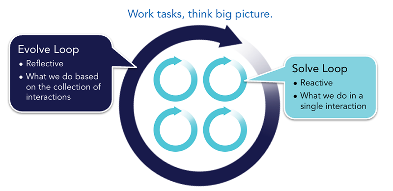
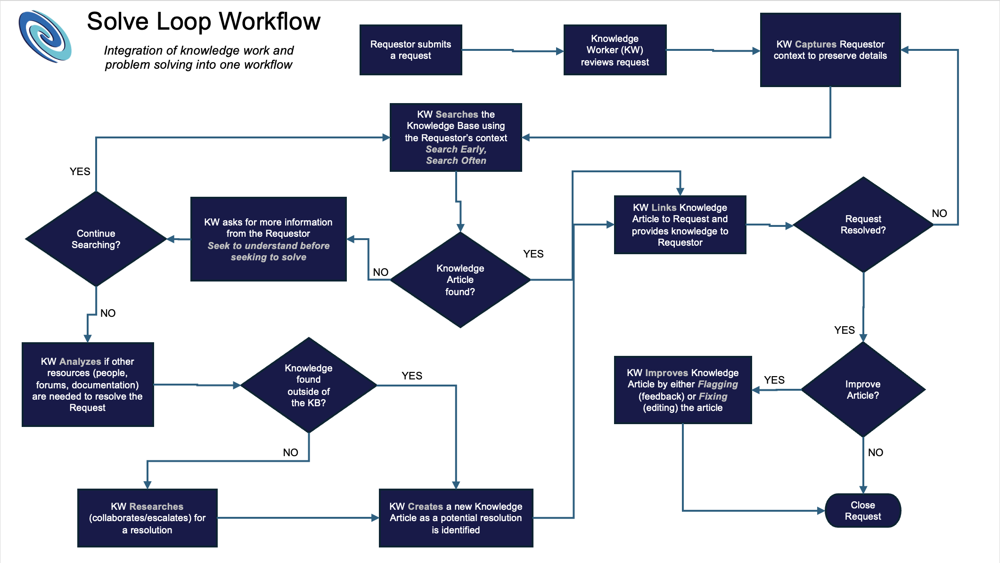
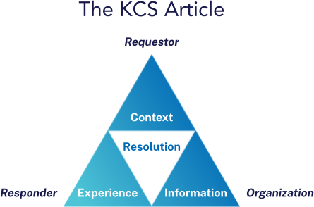
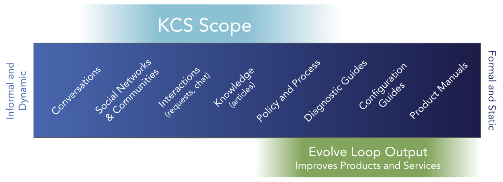

出典: Consortium for Service Innovation, Knowledge-Centered Success: Practices Guide (2027) — CC BY-NC 4.0（原文を日本語に翻訳し、ページを章ごとにまとめ直したもの） 元のページ:
図：Knowledge-Centered Success のダブルループ。右の Solve Loop（SOLVE）に再利用（Reuse）・改善（Improve）・記録（Capture）・構造化（Structure）、左の Evolve Loop（EVOLVE）にコンテンツの健全性（Content Health）・プロセスの統合（Process Integration）・パフォーマンスの把握（Performance Insight）・チェンジマネジメント（Change Management）が並ぶ。中央の三角形はKCS記事を表す。
Knowledge-Centered Success（KCS^(®)）は、単純な考え方でありながら大きな効果を生む。ワークフローの一部として、ナレッジを再利用し、改善し、（まだ無ければ）作成し、それを探している人が使える状態にしておけば、次のことが実現できる。
そのために、ナレッジに日々触れている人たちがナレッジのオーナーシップを持てるようにする。これには、仕事・人・測定・プロセスについて、これまでとは違う考え方が必要になる場合がある。
KCSは、私たちがなぜそうするのかを説明する一連の基本的な信念（KCSの原則）の上に成り立っている。10個のコアコンセプト（原則より具体的なもの）は、それぞれ1つ以上の原則に基づいている。本ガイドが扱うのはどのようにであり、KCSをうまく機能させる方法について現時点でわかっている最善のことをまとめている。導入の段階的な計画は KCS Adoption & Transformation Guide にある。用語の詳細は KCS用語集 を参照のこと。
KCSという略称はこれまでの版と同じだが、名称は Knowledge-Centered Service から Knowledge-Centered Success に改めた。この方法論の適用範囲が広がっていることを反映した変更である。組織が自動化と人工知能の進歩を活かし続けるには、構造化され、最新の状態に保たれたナレッジこそが成功への道である。KCS v6 からの変更点は What's New in Knowledge-Centered Success に詳しい。
本ガイドは、Consortiumのメンバーが30年以上にわたってKCSを実践してきた経験に基づいている。その経験の多くは顧客向けサポートと社内ヘルプデスクの立場から得られたものだが、この手法は情報やナレッジを多く扱うあらゆる環境に当てはまる。人事、法務、マーケティング、営業、プロダクトマネジメント、開発部門を含め、会社全体でKCSを導入しているメンバーも少なくない。
Consortium for Service Innovation は、KCSの方法論を開発し、維持し続けている非営利団体であり、KCSの資料の発信元であり、KCSの認定機関でもある。Consortiumは、個人向けの KCS認定 と、ツール・サービス向けの KCS Verified / Aligned の認定を提供している。KCS Verified と KCS Aligned の制度は、KCSを支えるテクノロジーを評価する際に役立つ。Consortiumは、KCSの導入を成功に導き、ナレッジを多く扱うあらゆる業界でKCSの方法論の継続的改善に貢献する、KCSの実践者とベンダーのネットワークを育てている。
KCS®の方法論は、Consortium for Service Innovation の登録サービスマークである。文書や発表でKCSに初めて言及するときは、上付きの®を付けなければならない。また、次の脚注または括弧書きも添えること：「KCS® is a service mark of the Consortium for Service Innovation^(™).」
Consortium for Service Innovation の書面による明示的な許可なく、KCSを商用の提供物の名称に使うことはできない。質問は Consortium へ問い合わせる こと。
ナレッジとは何か、ナレッジはどのように流れるか、そしてKCSの構造がどのように学習を生み、ナレッジを意味のある状態に保つのかを定義する。
KCSを理解するには、まず私たちがナレッジという言葉で何を意味しているのかを理解することから始まる。ナレッジを、データと情報との関係の中に置いてみるとわかりやすい。データと情報を分けるものは何か。データは単なる数字や言葉であり、情報は整理された数字や言葉である。データを整理して情報にすることで、そこに何らかの意味が生まれる。では、ナレッジと情報を分けるものは何か。ナレッジとは、私が行動に移せる情報である。 ナレッジには行動が結び付いており、それを使って何かができる。
KCSは、組織の集合的な経験を、他の人が使える形で記録しようとする。要点は「使う」あるいは「行動に移す」ことにある。
例えば、長期の天気予報は、サンフランシスコのオフィスで働く人にとっては興味深い情報にすぎない。同じ天気予報が、ナパのブドウ園の管理者にとっては行動に移せるものになる。ブドウ園の管理者は、収穫の量と質を最大にするために判断し、行動を起こすからである。ある人にとってのナレッジが、別の人にとっては単なる情報でしかない。
ナレッジの重要な性質にはどのようなものがあるか。まず認識すべきなのは、私が行動に移せる情報かどうかは、その情報に関する何らかのコンテキストや経験を私が持っているかどうかに左右されるということである。つまり、情報を行動に移せるものにするには、それを補う何かをあらかじめ知っていなければならない。だから、私にとって行動に移せる情報が、あなたにとってもそうだとは限らない。誰もがナレッジの場に何かを持ち寄っているのである。ここから、ナレッジについての居心地の悪い曖昧さが生まれる。私にとってのナレッジが、あなたにとってのナレッジではないかもしれない。ナレッジは絶対的なものではない。つまり、「ナレッジベース」にあるものは、実際には潜在的なナレッジにすぎない。その情報が役に立つかどうかは、それを見ている人のコンテキスト・経験・必要性によって決まるからである。情報は使われるその瞬間にナレッジになる。
私たちは誰もが何らかのナレッジ、つまり情報をもとに行動する力を持っている。自分自身のナレッジについて、いくつか問いを立ててみると興味深い。
私たちは、やり取りと経験を通じてナレッジを得る。自分のナレッジについて絶対の確信を持てることは決してない、という点には多くの人が同意するだろう。実際、私たちは学ぶのをやめることがないからである。私たちは絶えず新しい視点を得て、知っていることを深めている。そして、知っていることへの確信は、それを試すことによって得る。最初にナレッジを得たときと同じく、経験を通じて得るのである。専門家に体系的にナレッジをレビューしてもらい、何が良くて何が良くないかを教えてもらうわけではない。
ナレッジの性質を考えると、ナレッジは次のようなものだと言える。
ナレッジベースやナレッジマネジメントの実践を導入すると言ったとき、組織の人たちが期待しているのはこういうものだろうか。やり取りと経験の結果として作られ、絶えず変化し、決して完成せず、絶対に正確というわけでもなく、使われることで検証されるもの、と期待しているだろうか。たいていはそうではない。ナレッジベースやナレッジマネジメントシステムには、専門家が承認した完璧で汚れのないナレッジが入っている、と期待されていることが多い。集合的なナレッジと経験の力を活かしたいなら、この期待を変えなければならない。それは、考え方を次のように転換することを意味する。
この考え方の転換を後押ししてくれるのが、Dave Snowden が作った Cynefin フレームワーク というモデルである。これは意思決定のためのフレームワークで、問題の種類を見分け、それぞれへの最善の取り組み方を示す。このモデルは5つの領域（問題の種類）を説明しているが、そのうち2つが、ナレッジマネジメントへの取り組み方を考えるうえで特に役に立つ。
煩雑（complicated） な領域には、原因と結果に直接の関係がある状況が当てはまる。システムを構成する要素どうしの関係がはっきりと理解されている。飛行機の製造は煩雑な問題の一例であり、チェックリストと専門家の集団によって管理できる。このようなシステムに影響を与えるには、データを集め、そのデータを分析して理解し、分析に基づいて判断する。
組織には、あらゆる問題を煩雑な問題であるかのように扱う傾向がある。もう少しデータを集めさえすれば、分析によって問題から抜け出せるはずだと考えたくなる。しかし状況によっては、実験して結果を観察し、それを踏まえて繰り返し実験し直すのが最も効果的な取り組み方である。
複雑（complex） な領域には、部分の総和以上のものになっている状況が当てはまる。要素どうしの原因と結果がはっきりしない。企業文化は複雑系の一例である。影響を与えている要因をすべて挙げ尽くすことは難しく、どの行動がどの結果につながるかを一貫して見通すことも難しい。複雑系に影響を与えるには、実験し、観察してデータを集め、次の実験を行い、どの要素が他の要素に影響しているのかを少しずつ探り出していかなければならない。
ナレッジは複雑系のように流れる。誰が何を、どのようなコンテキストで知っていて、それにどうすればアクセスできるのかを知るのは難しい。KCSが強力である理由の1つは、この複雑さに影響を与え、そこから学ぶための取り組み方を与えてくれることにある。
KCSは生きたシステムであり、完了日のあるプロジェクトではない。KCSは主に、複雑適応系（complex adaptive systems）の分野で行われた研究に基づいている。この研究は、直線的なプロセスではなく、ダブルループのプロセスについて述べている。
ループ型のプロセスは、各ステップが他のステップとつながっているため、説明が難しいことがある。そこで、まずシステム全体がどのようなものかを示し、そのあとでワークフローの中にこれらのループがどう現れるかを例で見ていく。
ナレッジベースの健全性と組織の能力を最大限に高めるため、KCSの方法論の8つのプラクティスは、互いに強め合うダブルループのプロセスとして構成されている。このSolve LoopとEvolve Loopのプロセスが、システムを構成する日々の運用上の活動である。

図：「作業はタスク単位で、思考は全体像で」。小さな4つのループが Solve Loop（受け身。1回のやり取りの中で行うこと）、それを囲む大きなループが Evolve Loop（振り返り。やり取りの集まりに基づいて行うこと）。
Solve Loopは、対応者（ナレッジワーカー）が依頼者の課題を解決するときの責任を表す。Solve Loopのプラクティスは、受け身で、1件ごとに完結するものである。
Evolve Loopは、リーダーシップの責任と、組織レベルのプロセスを表す。Evolve Loopのプラクティスは、Solve Loopで起きているやり取りを定義し、そこから学び、改善する。
価値を生む（Create Value）の原則では、「作業はタスク単位で、思考は全体像で」と述べている。「作業はタスク単位で」がSolve Loopであり、「全体像」がEvolve Loopである。Solve Loopではタスクを完了させることに集中しつつ、タスクの積み重ねがEvolve Loopにもたらしうる利益を理解しておきたい。Evolve Loopは、Solve Loopのタスクの集まりと、それに関連するナレッジ記事を振り返り、そこから学ぶ。これは、一つひとつのタスクが正しく行われていて初めて機能する。Solve LoopとEvolve Loopは相互に依存しており、それぞれがもう一方を可能にしている。
パターンから学び、パターンに影響を与えたいなら、やり取りと活動に気を配る必要がある。Solve LoopとEvolve Loopは、合わさって自己修正するシステムを作り出す。Evolve Loopの分析を可能にするのは、一つひとつが正しく処理された、数多くのSolve Loopの出来事の集積である。出来事の集まりと関連するナレッジ記事を時間をかけて分析することで、Evolve LoopはSolve Loopの改善点を見つけ出す。そしておそらく最も重要なのは、Evolve Loopが事業そのものを改善する機会を見つけ出すことである。Evolve Loopで行う根本原因分析は、ナレッジワーカーと、私たちがサービスを提供する相手の集合的な経験に基づいて、製品・サービス・プロセス・方針の改善を推し進めることができる。
図：KCSのダブルループのプロセス（KCS Double Loop Process）。Solve Loop の4つのプラクティス（再利用・改善・記録・構造化）と、Evolve Loop の4つのプラクティス（コンテンツの健全性・プロセスの統合・パフォーマンスの把握・チェンジマネジメント）。
サポートセンターでは、これはどのような形になるだろうか。ナレッジワーカーのもとに質問が届く。ナレッジワーカーは依頼の内容を確認し、依頼者のコンテキストを記録する。対応者は、そのコンテキストを使ってナレッジベースを検索する。質問に答えるナレッジ記事が見つかったら、その記事を依頼に紐付け、依頼者にナレッジを提供する。
このSolve Loopの流れに沿って作業すると、Evolve Loopで分析するための利用データが得られる。そこには依頼者（と対応者）の体験についての洞察が含まれ、製品・プロセス・方針の改善といった是正措置が可能になる。

図：Solve Loop のワークフロー（ナレッジワークと問題解決を1つのワークフローに統合する）。依頼者が依頼を送る → ナレッジワーカー（KW）が依頼を確認 → 依頼者のコンテキストを記録 → そのコンテキストでナレッジベースを検索（早めに探し、何度も探す） → 記事が見つかれば依頼に紐付けてナレッジを提供。見つからなければ依頼者に追加情報を尋ねて（解決しようとする前に理解しようとする）検索を続け、検索をやめる場合はナレッジベースの外の資源（人・フォーラム・ドキュメント）を調べ、それでも無ければ調査（協働・エスカレーション）する。解決策が見えたら新しい記事を作成して紐付ける。依頼が解決したら、記事を改善するか判断し、指摘（フィードバック）か修正（編集）を行って依頼を閉じる。解決しなければコンテキストの記録に戻る。
図：KCSのダブルループのプロセス（KCS Double Loop Process）。Solve Loop の4つのプラクティス（再利用・改善・記録・構造化）と、Evolve Loop の4つのプラクティス（コンテンツの健全性・プロセスの統合・パフォーマンスの把握・チェンジマネジメント）。
KCSの方法論は、3つの要素で構成されている。
KCSの目標は、タイムリーで、見つけられ、使えるナレッジを、それを探している対象者に届けることである。Solve Loopのプラクティスとテクニックは、依頼に対応すること、つまりナレッジワークの副産物として、ナレッジ記事を再利用し、改善し、まだ無ければ作成することに焦点を当てている。Evolve Loopのプラクティスとテクニックは、Solve Loopの出来事の集まりと、Solve Loopにおけるナレッジの再利用のパターンから学ぶことに焦点を当てている。
ナレッジはやり取りの副産物である。ナレッジを意味のある、見つけられるものにするため、依頼と対応のやり取りの最中に、依頼者のコンテキストの中で記録し、構造化する。KCSでは、ナレッジワーカーが課題の解決策を探すとき、最初に頼る情報源としてナレッジベースを使ってほしい。検索するという行為が、依頼の内容と、課題が起きている環境を記録する。KCS記事は、依頼者の課題（依頼者自身の言葉で）と環境を記録し、あわせて対応者による解決策も記録する。課題を解決したときの対応者の経験を記録することもできる。いったん記録されたKCS記事は、「再利用はレビューである」という言葉が示すとおり、需要と利用状況に応じて時間とともに改善されていく。このナレッジの維持管理のライフサイクルは、ナレッジが進化するにつれて際限なく続く。

図：KCS記事（The KCS Article）。依頼者（Requestor）のコンテキスト（Context）、対応者（Responder）の経験（Experience）、組織（Organization）の情報（Information）の3つの視点が、中央の解決策（Resolution）で結び付く。
KCS記事とは、KCSの方法論を用いて作られるコンテンツである。記事は、単純な質問、複雑な問題、手順など、さまざまな種類のコンテンツに使える。KCS記事にはわずかな構造があり、依頼者・対応者・組織という3つのグループの視点を統合している。
記事の狙いは、これらの視点を結び付け、どんな質問が（どれくらいの頻度で）寄せられ、どんな答えが（どの版で）提供されたのかを全体として見渡せるようにすることである。多くの場合、KCS記事は決められた項目を持つ独立したオブジェクトだが、自動化のツールと機能の進歩によって新たな可能性が開かれつつある。
どの組織にも、価値ある再利用可能な情報を含む、幅広いコンテンツがある。KCSは、役に立つだけの構造を持ちながら、急速に変化する環境に合わせられるだけの柔軟さも備えた形で、情報を一貫して記録するための方法論と一連のプラクティスを提供する。KCSのプロセスは、多くのコンテンツ源から材料を引き出し、日々使うためのコンテキストに即したナレッジベースを作るだけでなく、新しい資料も生み出す。その資料は既存のコンテンツを参照することもあり、製品設計、マーケティング計画、現場向けの研修、ドキュメントといった他の業務コンテンツにも活かされる。KCSの原則は多くの種類のコンテンツを維持管理するうえで役に立つかもしれないが、KCS記事は、あらゆる用途に合う万能のコンテンツ形式を目指したものではない。

図：コンテンツの連続体。左ほど非公式で動的（会話、ソーシャルネットワークとコミュニティ、やり取り（依頼・チャット）、ナレッジ（記事））、右ほど公式で静的（方針とプロセス、診断ガイド、設定ガイド、製品マニュアル）。上の帯がKCSの範囲、下の帯が Evolve Loop のアウトプット（製品とサービスを改善する）。